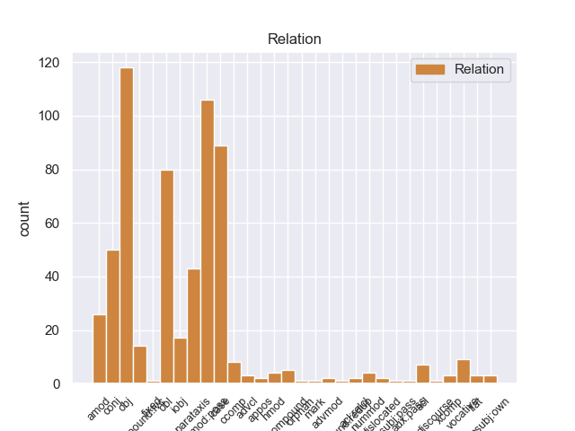
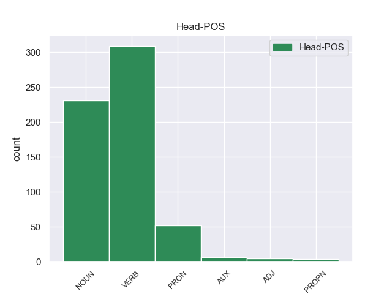
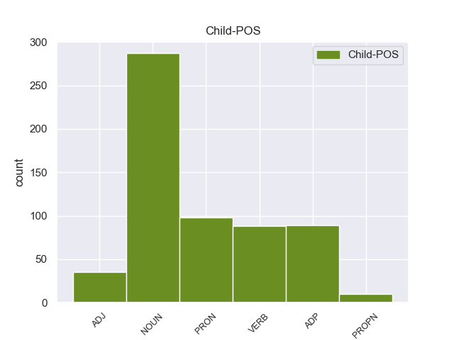

Distribution of features within this leaf



Agreement Rules sorted by frequency.
- When the dependent token is the object(obj) of the head token, and the head token is VERB and the dependent token is NOUN.
1 None _ _ _ _ 0 _ _ _
2 None _ _ _ _ 0 _ _ _
3 दोन _ _ _ _ 0 _ _ _
4 - _ _ _ _ 0 _ _ _
5 चार _ _ _ _ 0 _ _ _
6 कलमे कलम NOUN _ Case=Acc|Gender=Neut|Number=Plur 7 obj _ _
7 लावली लावणे VERB _ Aspect=Perf|Gender=Neut|Number=Plur|Person=3|VerbForm=Fin 0 _ _ _
8 होती _ _ _ _ 0 _ _ _
9 . _ _ _ _ 0 _ _ _
1 None _ _ _ _ 0 _ _ _
2 None _ _ _ _ 0 _ _ _
3 None _ _ _ _ 0 _ _ _
4 None _ _ _ _ 0 _ _ _
5 काठी काठ NOUN _ Case=Loc|Gender=Fem|Number=Sing 7 obl _ _
6 भीमा _ _ _ _ 0 _ _ _
7 बसला बसणे VERB _ Aspect=Perf|Gender=Masc|Number=Sing|Person=3|VerbForm=Fin 0 _ _ _
8 होता _ _ _ _ 0 _ _ _
9 . _ _ _ _ 0 _ _ _
1 पलीकडे _ _ _ _ 0 _ _ _
2 _ तो PRON _ Distance=Dist|Gender=Masc|Number=Sing|Person=3 5 nmod:poss _ _
3 None _ _ _ _ 0 _ _ _
4 लहानसा _ _ _ _ 0 _ _ _
5 गोठा गोठा NOUN _ Case=Nom|Gender=Masc|Number=Sing 0 _ _ _
6 होता _ _ _ _ 0 _ _ _
7 . _ _ _ _ 0 _ _ _
1 _ विहिर NOUN _ Case=Obl|Gender=Fem|Number=Sing 3 nmod:poss _ _
2 None _ _ _ _ 0 _ _ _
3 कडेला कडे NOUN _ Case=Dat|Gender=Masc|Number=Sing 0 _ _ _
4 फुलझाडे _ _ _ _ 0 _ _ _
5 होती _ _ _ _ 0 _ _ _
6 . _ _ _ _ 0 _ _ _
1 पलीकडे _ _ _ _ 0 _ _ _
2 _ तो PRON _ Distance=Dist|Gender=Masc|Number=Sing|Person=3 0 _ _ _
3 _ चा ADP _ Gender=Masc|Number=Sing 2 case _ _
4 लहानसा _ _ _ _ 0 _ _ _
5 गोठा _ _ _ _ 0 _ _ _
6 होता _ _ _ _ 0 _ _ _
7 . _ _ _ _ 0 _ _ _
1 असे _ _ _ _ 0 _ _ _
2 _ धमकी NOUN _ Case=Obl|Gender=Fem|Number=Sing 0 _ _ _
3 _ चा ADP _ Gender=Neut|Number=Sing 2 case _ _
4 भाषण _ _ _ _ 0 _ _ _
5 करून _ _ _ _ 0 _ _ _
6 केशवचंद्र _ _ _ _ 0 _ _ _
7 निघून _ _ _ _ 0 _ _ _
8 गेले _ _ _ _ 0 _ _ _
9 . _ _ _ _ 0 _ _ _
1 मुलेबाळे _ _ _ _ 0 _ _ _
2 तेथे _ _ _ _ 0 _ _ _
3 येतात येणे VERB _ Aspect=Imp|Number=Plur|Person=3|Tense=Pres|VerbForm=Fin 0 _ _ _
4 , _ _ _ _ 0 _ _ _
5 खपतात _ _ _ _ 0 _ _ _
6 , _ _ _ _ 0 _ _ _
7 खेळतात खेळणे VERB _ Aspect=Imp|Number=Plur|Person=3|Tense=Pres|VerbForm=Fin 3 conj _ SpaceAfter=No
8 . _ _ _ _ 0 _ _ _
1 ती _ _ _ _ 0 _ _ _
2 हसून _ _ _ _ 0 _ _ _
3 म्हणते म्हणणे VERB _ Aspect=Imp|Gender=Fem|Number=Sing|Person=3|Tense=Pres|VerbForm=Fin 0 _ _ _
4 , _ _ _ _ 0 _ _ _
5 " _ _ _ _ 0 _ _ _
6 मला _ _ _ _ 0 _ _ _
7 तू _ _ _ _ 0 _ _ _
8 सापडलास सापडणे VERB _ Aspect=Perf|Gender=Masc|Number=Sing|Person=2|VerbForm=Fin 3 parataxis _ SpaceAfter=No
9 ! _ _ _ _ 0 _ _ _
10 " _ _ _ _ 0 _ _ _
11 . _ _ _ _ 0 _ _ _
1 पलीकडे _ _ _ _ 0 _ _ _
2 None _ _ _ _ 0 _ _ _
3 None _ _ _ _ 0 _ _ _
4 लहानसा लहानसा ADJ _ Case=Nom|Gender=Masc|Number=Sing 5 amod _ _
5 गोठा गोठा NOUN _ Case=Nom|Gender=Masc|Number=Sing 0 _ _ _
6 होता _ _ _ _ 0 _ _ _
7 . _ _ _ _ 0 _ _ _
1 ही हा PRON _ Case=Acc|Distance=Prox|Gender=Fem|Number=Sing|Person=3 4 obj _ _
2 का _ _ _ _ 0 _ _ _
3 मी _ _ _ _ 0 _ _ _
4 विकू विकणे VERB _ Mood=Imp|Number=Sing|Person=1|VerbForm=Fin 0 _ _ _
5 ? _ _ _ _ 0 _ _ _
1 खरोखरच _ _ _ _ 0 _ _ _
2 त्या _ _ _ _ 0 _ _ _
3 None _ _ _ _ 0 _ _ _
4 None _ _ _ _ 0 _ _ _
5 None _ _ _ _ 0 _ _ _
6 None _ _ _ _ 0 _ _ _
7 जीव जीव NOUN _ Case=Nom|Gender=Masc|Number=Sing 0 _ _ _
8 की _ _ _ _ 0 _ _ _
9 प्राण प्राण NOUN _ Case=Nom|Gender=Masc|Number=Sing 7 conj _ _
10 प्रेम _ _ _ _ 0 _ _ _
11 होते _ _ _ _ 0 _ _ _
12 . _ _ _ _ 0 _ _ _
1 राजपुत्राने _ _ _ _ 0 _ _ _
2 राजाला राजाला NOUN _ Case=Dat|Gender=Masc|Number=Sing 8 iobj _ _
3 None _ _ _ _ 0 _ _ _
4 None _ _ _ _ 0 _ _ _
5 None _ _ _ _ 0 _ _ _
6 None _ _ _ _ 0 _ _ _
7 निरोप _ _ _ _ 0 _ _ _
8 सांगितला सांगसांगणे VERB _ Aspect=Perf|Gender=Masc|Number=Sing|Person=3|VerbForm=Fin 0 _ _ _
9 . _ _ _ _ 0 _ _ _
1 लोकांनी _ _ _ _ 0 _ _ _
2 टाळ्या टाळी NOUN _ Case=Nom|Gender=Fem|Number=Plur 3 compound:lvc _ _
3 पिटल्या पिटणे VERB _ Aspect=Perf|Gender=Fem|Number=Plur|Person=3|VerbForm=Fin 0 _ _ _
4 . _ _ _ _ 0 _ _ _
1 हा _ _ _ _ 0 _ _ _
2 साप _ _ _ _ 0 _ _ _
3 _ तू PRON _ Case=Obl|Number=Sing|Person=2 10 obl _ _
4 None _ _ _ _ 0 _ _ _
5 None _ _ _ _ 0 _ _ _
6 अमृतबिंदू _ _ _ _ 0 _ _ _
7 घेऊन _ _ _ _ 0 _ _ _
8 None _ _ _ _ 0 _ _ _
9 None _ _ _ _ 0 _ _ _
10 येईल येणे VERB _ Number=Sing|Person=3|Tense=Fut|VerbForm=Fin 0 _ _ _
11 , _ _ _ _ 0 _ _ _
12 शेष _ _ _ _ 0 _ _ _
13 म्हणाला _ _ _ _ 0 _ _ _
14 . _ _ _ _ 0 _ _ _
1 आज _ _ _ _ 0 _ _ _
2 मी _ _ _ _ 0 _ _ _
3 तुला _ _ _ _ 0 _ _ _
4 तू _ _ _ _ 0 _ _ _
5 मागशील मागणे VERB _ Number=Sing|Person=2|Tense=Fut|VerbForm=Fin 7 acl _ _
6 ती _ _ _ _ 0 _ _ _
7 किंमत किंमत NOUN _ Case=Acc|Gender=Fem|Number=Sing 0 _ _ _
8 द्यायला _ _ _ _ 0 _ _ _
9 तयार _ _ _ _ 0 _ _ _
10 झालो _ _ _ _ 0 _ _ _
11 होतो _ _ _ _ 0 _ _ _
12 ; _ _ _ _ 0 _ _ _
13 परंतु _ _ _ _ 0 _ _ _
14 None _ _ _ _ 0 _ _ _
15 None _ _ _ _ 0 _ _ _
16 बुद्धी _ _ _ _ 0 _ _ _
17 भ्रष्ट _ _ _ _ 0 _ _ _
18 झाली _ _ _ _ 0 _ _ _
19 आहे _ _ _ _ 0 _ _ _
20 . _ _ _ _ 0 _ _ _
1 _ रान NOUN _ Case=Obl|Gender=Neut|Number=Sing 2 compound _ _
2 _ वन NOUN _ Case=Loc|Gender=Neut|Number=Sing 0 _ _ _
3 एकटा _ _ _ _ 0 _ _ _
4 का _ _ _ _ 0 _ _ _
5 ? _ _ _ _ 0 _ _ _
6 राजपुत्राने _ _ _ _ 0 _ _ _
7 विचारले _ _ _ _ 0 _ _ _
8 . _ _ _ _ 0 _ _ _
1 रात्री _ _ _ _ 0 _ _ _
2 चौघे चौघे ADJ _ Case=Nom|Gender=Neut|Number=Plur 3 nummod _ _
3 भावंडे भावंड NOUN _ Case=Nom|Gender=Neut|Number=Plur 0 _ _ _
4 निघाली _ _ _ _ 0 _ _ _
5 . _ _ _ _ 0 _ _ _
1 खरोखरच _ _ _ _ 0 _ _ _
2 त्या _ _ _ _ 0 _ _ _
3 None _ _ _ _ 0 _ _ _
4 None _ _ _ _ 0 _ _ _
5 None _ _ _ _ 0 _ _ _
6 None _ _ _ _ 0 _ _ _
7 जीव जीव NOUN _ Case=Nom|Gender=Masc|Number=Sing 10 amod _ _
8 की _ _ _ _ 0 _ _ _
9 प्राण _ _ _ _ 0 _ _ _
10 प्रेम प्रेम NOUN _ Case=Nom|Gender=Neut|Number=Sing 0 _ _ _
11 होते _ _ _ _ 0 _ _ _
12 . _ _ _ _ 0 _ _ _
1 पुन्हा _ _ _ _ 0 _ _ _
2 थोड्या _ _ _ _ 0 _ _ _
3 None _ _ _ _ 0 _ _ _
4 None _ _ _ _ 0 _ _ _
5 बहीण _ _ _ _ 0 _ _ _
6 म्हणाली _ _ _ _ 0 _ _ _
7 , _ _ _ _ 0 _ _ _
8 दादा दादा NOUN _ Case=Nom|Gender=Masc|Number=Sing 13 vocative _ SpaceAfter=No
9 , _ _ _ _ 0 _ _ _
10 None _ _ _ _ 0 _ _ _
11 None _ _ _ _ 0 _ _ _
12 निरोप _ _ _ _ 0 _ _ _
13 दे देणे VERB _ Mood=Imp|Number=Sing|Person=2|VerbForm=Fin 0 _ _ _
14 ! _ _ _ _ 0 _ _ _
1 " _ _ _ _ 0 _ _ _
2 सांग सांगणे VERB _ Mood=Imp|Number=Sing|Person=2|VerbForm=Fin 0 _ _ _
3 मला मी PRON _ Case=Dat|Number=Sing|Person=1 2 iobj _ SpaceAfter=No
4 , _ _ _ _ 0 _ _ _
5 तो _ _ _ _ 0 _ _ _
6 कुठे _ _ _ _ 0 _ _ _
7 आहे _ _ _ _ 0 _ _ _
8 ! _ _ _ _ 0 _ _ _
9 " _ _ _ _ 0 _ _ _
10 , _ _ _ _ 0 _ _ _
11 ती _ _ _ _ 0 _ _ _
12 None _ _ _ _ 0 _ _ _
13 None _ _ _ _ 0 _ _ _
14 आईला _ _ _ _ 0 _ _ _
15 म्हणते _ _ _ _ 0 _ _ _
16 . _ _ _ _ 0 _ _ _
1 काय _ _ _ _ 0 _ _ _
2 उपाय उपाय NOUN _ Case=Nom|Gender=Masc|Number=Sing 0 _ _ _
3 ? _ _ _ _ 0 _ _ _
4 राजाने _ _ _ _ 0 _ _ _
5 विचारले विचारणे VERB _ Aspect=Perf|Gender=Neut|Number=Sing|Person=3|VerbForm=Fin 2 parataxis _ SpaceAfter=No
6 . _ _ _ _ 0 _ _ _
1 हे _ _ _ _ 0 _ _ _
2 None _ _ _ _ 0 _ _ _
3 None _ _ _ _ 0 _ _ _
4 शेत _ _ _ _ 0 _ _ _
5 गेले जाणे VERB _ Aspect=Perf|Gender=Neut|Number=Sing|Person=3|VerbForm=Fin 6 ccomp _ _
6 समज समजणे VERB _ Mood=Imp|Number=Sing|Person=2|VerbForm=Fin 0 _ _ _
7 आणि _ _ _ _ 0 _ _ _
8 तुला _ _ _ _ 0 _ _ _
9 None _ _ _ _ 0 _ _ _
10 None _ _ _ _ 0 _ _ _
11 न _ _ _ _ 0 _ _ _
12 मिळता _ _ _ _ 0 _ _ _
13 . _ _ _ _ 0 _ _ _
1 खरोखरच _ _ _ _ 0 _ _ _
2 त्या _ _ _ _ 0 _ _ _
3 _ शेत NOUN _ Case=Obl|Gender=Neut|Number=Sing 10 obl _ _
4 None _ _ _ _ 0 _ _ _
5 None _ _ _ _ 0 _ _ _
6 None _ _ _ _ 0 _ _ _
7 जीव _ _ _ _ 0 _ _ _
8 की _ _ _ _ 0 _ _ _
9 प्राण _ _ _ _ 0 _ _ _
10 प्रेम प्रेम NOUN _ Case=Nom|Gender=Neut|Number=Sing 0 _ _ _
11 होते _ _ _ _ 0 _ _ _
12 . _ _ _ _ 0 _ _ _
1 खरोखरच _ _ _ _ 0 _ _ _
2 त्या _ _ _ _ 0 _ _ _
3 None _ _ _ _ 0 _ _ _
4 None _ _ _ _ 0 _ _ _
5 _ भीम PROPN _ Case=Obl|Gender=Masc|Number=Sing 7 nmod:poss _ _
6 None _ _ _ _ 0 _ _ _
7 जीव जीव NOUN _ Case=Nom|Gender=Masc|Number=Sing 0 _ _ _
8 की _ _ _ _ 0 _ _ _
9 प्राण _ _ _ _ 0 _ _ _
10 प्रेम _ _ _ _ 0 _ _ _
11 होते _ _ _ _ 0 _ _ _
12 . _ _ _ _ 0 _ _ _
1 खरोखरच _ _ _ _ 0 _ _ _
2 त्या _ _ _ _ 0 _ _ _
3 None _ _ _ _ 0 _ _ _
4 None _ _ _ _ 0 _ _ _
5 _ भीम PROPN _ Case=Obl|Gender=Masc|Number=Sing 0 _ _ _
6 _ चा ADP _ Gender=Neut|Number=Sing 5 case _ _
7 जीव _ _ _ _ 0 _ _ _
8 की _ _ _ _ 0 _ _ _
9 प्राण _ _ _ _ 0 _ _ _
10 प्रेम _ _ _ _ 0 _ _ _
11 होते _ _ _ _ 0 _ _ _
12 . _ _ _ _ 0 _ _ _
1 ती _ _ _ _ 0 _ _ _
2 म्हणाली _ _ _ _ 0 _ _ _
3 , _ _ _ _ 0 _ _ _
4 राजाला _ _ _ _ 0 _ _ _
5 सांग सांगणे VERB _ Mood=Imp|Number=Sing|Person=2|VerbForm=Fin 0 _ _ _
6 मी _ _ _ _ 0 _ _ _
7 व्रती व्रती NOUN _ Case=Nom|Gender=Fem|Number=Sing 5 ccomp _ _
8 आहे _ _ _ _ 0 _ _ _
9 . _ _ _ _ 0 _ _ _
1 None _ _ _ _ 0 _ _ _
2 None _ _ _ _ 0 _ _ _
3 आज्ञा _ _ _ _ 0 _ _ _
4 प्रमाण _ _ _ _ 0 _ _ _
5 , _ _ _ _ 0 _ _ _
6 असे _ _ _ _ 0 _ _ _
7 म्हणून _ _ _ _ 0 _ _ _
8 None _ _ _ _ 0 _ _ _
9 None _ _ _ _ 0 _ _ _
10 पाया _ _ _ _ 0 _ _ _
11 पडून _ _ _ _ 0 _ _ _
12 तो _ _ _ _ 0 _ _ _
13 _ आई NOUN _ Case=Obl|Gender=Fem|Number=Sing 15 nmod _ _
14 None _ _ _ _ 0 _ _ _
15 निरोप निरोप NOUN _ Case=Nom|Gender=Masc|Number=Sing 0 _ _ _
16 घ्यायला _ _ _ _ 0 _ _ _
17 गेला _ _ _ _ 0 _ _ _
18 . _ _ _ _ 0 _ _ _
1 बरोबर _ _ _ _ 0 _ _ _
2 _ फराळ NOUN _ Case=Obl|Gender=Masc|Number=Sing 4 obj _ _
3 None _ _ _ _ 0 _ _ _
4 होते असणे AUX _ Gender=Neut|Number=Sing|Person=3|Tense=Past|VerbForm=Fin 0 _ _ _
5 . _ _ _ _ 0 _ _ _
1 ठीक _ _ _ _ 0 _ _ _
2 आहे असणे AUX _ Number=Sing|Person=3|Tense=Pres|VerbForm=Fin 0 _ _ _
3 , _ _ _ _ 0 _ _ _
4 राजा _ _ _ _ 0 _ _ _
5 म्हणाला म्हणणे VERB _ Aspect=Perf|Gender=Masc|Number=Sing|Person=3|VerbForm=Fin 2 parataxis _ SpaceAfter=No
6 . _ _ _ _ 0 _ _ _
1 त्याला _ _ _ _ 0 _ _ _
2 सांगा _ _ _ _ 0 _ _ _
3 कि _ _ _ _ 0 _ _ _
4 , _ _ _ _ 0 _ _ _
5 बहीण _ _ _ _ 0 _ _ _
6 तरी _ _ _ _ 0 _ _ _
7 दे _ _ _ _ 0 _ _ _
8 किंवा _ _ _ _ 0 _ _ _
9 मागील _ _ _ _ 0 _ _ _
10 None _ _ _ _ 0 _ _ _
11 None _ _ _ _ 0 _ _ _
12 समुद्रात _ _ _ _ 0 _ _ _
13 पडलेली पडणे VERB _ Aspect=Perf|Gender=Fem|Number=Sing|Person=3|VerbForm=Part 14 acl:relcl _ _
14 नथ नथ NOUN _ Case=Acc|Gender=Fem|Number=Sing 0 _ _ _
15 आणून _ _ _ _ 0 _ _ _
16 दे _ _ _ _ 0 _ _ _
17 , _ _ _ _ 0 _ _ _
18 नाहीतर _ _ _ _ 0 _ _ _
19 डोके _ _ _ _ 0 _ _ _
20 उडवीन _ _ _ _ 0 _ _ _
21 ! _ _ _ _ 0 _ _ _
22 खुशमस्कऱ्याने _ _ _ _ 0 _ _ _
23 सुचविले _ _ _ _ 0 _ _ _
24 . _ _ _ _ 0 _ _ _
1 मिळतील _ _ _ _ 0 _ _ _
2 ते तो PRON _ Case=Nom|Distance=Dist|Gender=Masc|Number=Plur|Person=3|PronType=Rel 0 _ _ _
3 मोती मोती NOUN _ Case=Nom|Gender=Masc|Number=Plur 2 dislocated _ _
4 तोंडात _ _ _ _ 0 _ _ _
5 धरून _ _ _ _ 0 _ _ _
6 आणू _ _ _ _ 0 _ _ _
7 , _ _ _ _ 0 _ _ _
8 None _ _ _ _ 0 _ _ _
9 None _ _ _ _ 0 _ _ _
10 अंगणात _ _ _ _ 0 _ _ _
11 ढीग _ _ _ _ 0 _ _ _
12 घालू _ _ _ _ 0 _ _ _
13 ! _ _ _ _ 0 _ _ _
1 दादा दादा NOUN _ Case=Nom|Gender=Masc|Number=Sing 5 vocative _ SpaceAfter=No
2 , _ _ _ _ 0 _ _ _
3 मी _ _ _ _ 0 _ _ _
4 तो _ _ _ _ 0 _ _ _
5 बेडूक बेडूक NOUN _ Case=Nom|Gender=Masc|Number=Sing 0 _ _ _
6 . _ _ _ _ 0 _ _ _
1 नवीन _ _ _ _ 0 _ _ _
2 राजा राजा NOUN _ Case=Nom|Gender=Neut|Number=Sing 0 _ _ _
3 - _ _ _ _ 0 _ _ _
4 राणी राणी NOUN _ Case=Nom|Gender=Fem|Number=Sing 2 flat _ _
5 उत्कृष्ठ _ _ _ _ 0 _ _ _
6 राज्यकारभार _ _ _ _ 0 _ _ _
7 चालवू _ _ _ _ 0 _ _ _
8 लागली _ _ _ _ 0 _ _ _
9 . _ _ _ _ 0 _ _ _
1 नाही _ _ _ _ 0 _ _ _
2 , _ _ _ _ 0 _ _ _
3 None _ _ _ _ 0 _ _ _
4 None _ _ _ _ 0 _ _ _
5 कुत्रा कुत्रा NOUN _ Case=Nom|Gender=Masc|Number=Sing 0 _ _ _
6 नाही _ _ _ _ 0 _ _ _
7 आहे _ _ _ _ 0 _ _ _
8 , _ _ _ _ 0 _ _ _
9 None _ _ _ _ 0 _ _ _
10 None _ _ _ _ 0 _ _ _
11 None _ _ _ _ 0 _ _ _
12 मांजर मांजर NOUN _ Case=Nom|Gender=Neut|Number=Sing 5 parataxis _ _
13 आहे _ _ _ _ 0 _ _ _
14 . _ _ _ _ 0 _ _ _
1 नाही _ _ _ _ 0 _ _ _
2 , _ _ _ _ 0 _ _ _
3 _ मेरी PROPN _ Case=Obl|Gender=Fem|Number=Sing 5 nsubj:own _ _
4 None _ _ _ _ 0 _ _ _
5 कुत्रा कुत्रा NOUN _ Case=Nom|Gender=Masc|Number=Sing 0 _ _ _
6 नाही _ _ _ _ 0 _ _ _
7 आहे _ _ _ _ 0 _ _ _
8 , _ _ _ _ 0 _ _ _
9 None _ _ _ _ 0 _ _ _
10 None _ _ _ _ 0 _ _ _
11 None _ _ _ _ 0 _ _ _
12 मांजर _ _ _ _ 0 _ _ _
13 आहे _ _ _ _ 0 _ _ _
14 . _ _ _ _ 0 _ _ _
1 None _ _ _ _ 0 _ _ _
2 None _ _ _ _ 0 _ _ _
3 आई _ _ _ _ 0 _ _ _
4 घरात घर NOUN _ Case=Loc|Gender=Neut|Number=Sing 0 _ _ _
5 None _ _ _ _ 0 _ _ _
6 None _ _ _ _ 0 _ _ _
7 आहे _ _ _ _ 0 _ _ _
8 , _ _ _ _ 0 _ _ _
9 ती _ _ _ _ 0 _ _ _
10 None _ _ _ _ 0 _ _ _
11 None _ _ _ _ 0 _ _ _
12 बघते बघणे VERB _ Aspect=Imp|Gender=Fem|Number=Sing|Person=3|Tense=Pres|VerbForm=Fin 4 conj _ _
13 आणि _ _ _ _ 0 _ _ _
14 तिला _ _ _ _ 0 _ _ _
15 जेम्स _ _ _ _ 0 _ _ _
16 आणि _ _ _ _ 0 _ _ _
17 मेरी _ _ _ _ 0 _ _ _
18 खेळताना _ _ _ _ 0 _ _ _
19 दिसतात _ _ _ _ 0 _ _ _
20 . _ _ _ _ 0 _ _ _
1 ती _ _ _ _ 0 _ _ _
2 अजून _ _ _ _ 0 _ _ _
3 जेम्सला जेम्स PROPN _ Case=Acc|Gender=Masc|Number=Sing 4 obj _ _
4 शोधायचा शोधणे VERB _ Gender=Masc|Mood=Des|Number=Sing|Person=3|VerbForm=Part 0 _ _ _
5 प्रयत्न _ _ _ _ 0 _ _ _
6 करत _ _ _ _ 0 _ _ _
7 आहे _ _ _ _ 0 _ _ _
8 . _ _ _ _ 0 _ _ _
1 एकुलता _ _ _ _ 0 _ _ _
2 एक _ _ _ _ 0 _ _ _
3 मुलगा _ _ _ _ 0 _ _ _
4 म्हणून _ _ _ _ 0 _ _ _
5 राजा _ _ _ _ 0 _ _ _
6 - _ _ _ _ 0 _ _ _
7 राणी _ _ _ _ 0 _ _ _
8 त्याला _ _ _ _ 0 _ _ _
9 जीव जीव NOUN _ Case=Nom|Gender=Masc|Number=Sing 0 _ _ _
10 की _ _ _ _ 0 _ _ _
11 प्राण प्राण NOUN _ Case=Nom|Gender=Masc|Number=Sing 9 fixed _ _
12 करित _ _ _ _ 0 _ _ _
13 . _ _ _ _ 0 _ _ _
1 " _ _ _ _ 0 _ _ _
2 आज _ _ _ _ 0 _ _ _
3 त्याला _ _ _ _ 0 _ _ _
4 हाकलून _ _ _ _ 0 _ _ _
5 देणे _ _ _ _ 0 _ _ _
6 तुला _ _ _ _ 0 _ _ _
7 _ कठोरपणा NOUN _ Case=Obl|Gender=Masc|Number=Sing 9 nmod:poss _ _
8 None _ _ _ _ 0 _ _ _
9 वाटले वाटणे VERB _ Aspect=Perf|Gender=Neut|Number=Sing|Person=3|VerbForm=Fin 0 _ _ _
10 तरी _ _ _ _ 0 _ _ _
11 None _ _ _ _ 0 _ _ _
12 None _ _ _ _ 0 _ _ _
13 None _ _ _ _ 0 _ _ _
14 None _ _ _ _ 0 _ _ _
15 आहे _ _ _ _ 0 _ _ _
16 , _ _ _ _ 0 _ _ _
17 " _ _ _ _ 0 _ _ _
18 तो _ _ _ _ 0 _ _ _
19 म्हणाला _ _ _ _ 0 _ _ _
20 . _ _ _ _ 0 _ _ _
1 आपण _ _ _ _ 0 _ _ _
2 आता _ _ _ _ 0 _ _ _
3 शहाणे _ _ _ _ 0 _ _ _
4 झालोत _ _ _ _ 0 _ _ _
5 असे _ _ _ _ 0 _ _ _
6 वाटेल वाटणे VERB _ Number=Sing|Person=1|Tense=Fut|VerbForm=Fin 9 advcl _ _
7 तेव्हा _ _ _ _ 0 _ _ _
8 घरी _ _ _ _ 0 _ _ _
9 ये येणे VERB _ Mood=Imp|Number=Sing|Person=2|VerbForm=Fin 0 _ _ _
10 ! _ _ _ _ 0 _ _ _
1 None _ _ _ _ 0 _ _ _
2 None _ _ _ _ 0 _ _ _
3 आज्ञा _ _ _ _ 0 _ _ _
4 प्रमाण प्रमाण NOUN _ Case=Nom|Gender=Neut|Number=Sing 0 _ _ _
5 , _ _ _ _ 0 _ _ _
6 असे असा ADJ _ Case=Nom|Gender=Neut|Number=Sing 4 appos _ _
7 म्हणून _ _ _ _ 0 _ _ _
8 None _ _ _ _ 0 _ _ _
9 None _ _ _ _ 0 _ _ _
10 पाया _ _ _ _ 0 _ _ _
11 पडून _ _ _ _ 0 _ _ _
12 तो _ _ _ _ 0 _ _ _
13 None _ _ _ _ 0 _ _ _
14 None _ _ _ _ 0 _ _ _
15 निरोप _ _ _ _ 0 _ _ _
16 घ्यायला _ _ _ _ 0 _ _ _
17 गेला _ _ _ _ 0 _ _ _
18 . _ _ _ _ 0 _ _ _
1 तो _ _ _ _ 0 _ _ _
2 None _ _ _ _ 0 _ _ _
3 None _ _ _ _ 0 _ _ _
4 पाया पाय NOUN _ Case=Loc|Gender=Masc|Number=Sing 5 nmod _ _
5 पडला पडणे VERB _ Aspect=Perf|Gender=Masc|Number=Sing|Person=3|VerbForm=Fin 0 _ _ _
6 . _ _ _ _ 0 _ _ _
1 त्या _ _ _ _ 0 _ _ _
2 None _ _ _ _ 0 _ _ _
3 None _ _ _ _ 0 _ _ _
4 त्याला तो PRON _ Case=Dat|Distance=Dist|Gender=Masc|Number=Sing|Person=3 6 iobj _ _
5 आठवण _ _ _ _ 0 _ _ _
6 झाली होणे AUX _ Aspect=Perf|Gender=Fem|Number=Sing|Person=3|VerbForm=Fin 0 _ _ _
7 . _ _ _ _ 0 _ _ _
1 त्या _ _ _ _ 0 _ _ _
2 None _ _ _ _ 0 _ _ _
3 None _ _ _ _ 0 _ _ _
4 त्याला _ _ _ _ 0 _ _ _
5 आठवण आठवण NOUN _ Case=Nom|Gender=Fem|Number=Sing 6 compound:lvc _ _
6 झाली होणे AUX _ Aspect=Perf|Gender=Fem|Number=Sing|Person=3|VerbForm=Fin 0 _ _ _
7 . _ _ _ _ 0 _ _ _
1 आईला आई NOUN _ Case=Dat|Gender=Fem|Number=Sing 0 _ _ _
2 किती _ _ _ _ 0 _ _ _
3 चिंता चिंता NOUN _ Case=Nom|Gender=Fem|Number=Sing 1 orphan _ _
4 ते _ _ _ _ 0 _ _ _
5 मनात _ _ _ _ 0 _ _ _
6 येऊन _ _ _ _ 0 _ _ _
7 None _ _ _ _ 0 _ _ _
8 None _ _ _ _ 0 _ _ _
9 डोळे _ _ _ _ 0 _ _ _
10 भरून _ _ _ _ 0 _ _ _
11 आले _ _ _ _ 0 _ _ _
12 . _ _ _ _ 0 _ _ _
1 आईला _ _ _ _ 0 _ _ _
2 किती _ _ _ _ 0 _ _ _
3 चिंता _ _ _ _ 0 _ _ _
4 ते तो PRON _ Case=Nom|Distance=Dist|Gender=Neut|Number=Sing|Person=3 5 mark _ _
5 मनात मन NOUN _ Case=Loc|Gender=Neut|Number=Sing 0 _ _ _
6 येऊन _ _ _ _ 0 _ _ _
7 None _ _ _ _ 0 _ _ _
8 None _ _ _ _ 0 _ _ _
9 डोळे _ _ _ _ 0 _ _ _
10 भरून _ _ _ _ 0 _ _ _
11 आले _ _ _ _ 0 _ _ _
12 . _ _ _ _ 0 _ _ _
1 _ साधा ADJ _ Case=Nom|Gender=Fem|Number=Sing 2 compound _ _
2 _ भोळा ADJ _ Case=Nom|Gender=Fem|Number=Sing 0 _ _ _
3 , _ _ _ _ 0 _ _ _
4 निष्पाप _ _ _ _ 0 _ _ _
5 दिसत _ _ _ _ 0 _ _ _
6 होती _ _ _ _ 0 _ _ _
7 . _ _ _ _ 0 _ _ _
1 ये येणे VERB _ Mood=Imp|Number=Sing|Person=2|VerbForm=Fin 0 _ _ _
2 _ मी PRON _ Case=Obl|Number=Sing|Person=1 1 advmod _ _
3 None _ _ _ _ 0 _ _ _
4 . _ _ _ _ 0 _ _ _
1 अर्धा अर्धा ADJ _ Case=Nom|Gender=Masc|Number=Sing 2 compound:redup _ _
2 अर्धा अर्धा ADJ _ Case=Nom|Gender=Masc|Number=Sing 0 _ _ _
3 लाडू _ _ _ _ 0 _ _ _
4 दोघांनी _ _ _ _ 0 _ _ _
5 खाल्ला _ _ _ _ 0 _ _ _
6 . _ _ _ _ 0 _ _ _
1 तू तू PRON _ Case=Nom|Number=Sing|Person=2 0 _ _ _
2 रे _ _ _ _ 0 _ _ _
3 कोण _ _ _ _ 0 _ _ _
4 ? _ _ _ _ 0 _ _ _
5 राजपुत्राने _ _ _ _ 0 _ _ _
6 विचारले विचारणे VERB _ Aspect=Perf|Gender=Neut|Number=Sing|Person=3|VerbForm=Fin 1 parataxis _ SpaceAfter=No
7 . _ _ _ _ 0 _ _ _
1 राजवाडा राजवाडा NOUN _ Case=Nom|Gender=Masc|Number=Sing 2 nsubj:pass _ _
2 शृंगारला शृंगारणे VERB _ Aspect=Perf|Gender=Masc|Number=Sing|Person=3|VerbForm=Fin 0 _ _ _
3 गेला _ _ _ _ 0 _ _ _
4 . _ _ _ _ 0 _ _ _
1 राजवाडा _ _ _ _ 0 _ _ _
2 शृंगारला शृंगारणे VERB _ Aspect=Perf|Gender=Masc|Number=Sing|Person=3|VerbForm=Fin 0 _ _ _
3 गेला जाणे VERB _ Aspect=Perf|Gender=Masc|Number=Sing|Person=3|VerbForm=Fin 2 aux:pass _ SpaceAfter=No
4 . _ _ _ _ 0 _ _ _
1 कुशल _ _ _ _ 0 _ _ _
2 प्रश्न _ _ _ _ 0 _ _ _
3 None _ _ _ _ 0 _ _ _
4 None _ _ _ _ 0 _ _ _
5 राजा _ _ _ _ 0 _ _ _
6 म्हणाला _ _ _ _ 0 _ _ _
7 , _ _ _ _ 0 _ _ _
8 None _ _ _ _ 0 _ _ _
9 None _ _ _ _ 0 _ _ _
10 पत्नी _ _ _ _ 0 _ _ _
11 फार _ _ _ _ 0 _ _ _
12 लावण्यवती लावण्यवती ADJ _ Case=Nom|Gender=Fem|Number=Sing 15 ccomp _ _
13 आहे _ _ _ _ 0 _ _ _
14 असे _ _ _ _ 0 _ _ _
15 ऐकतो ऐकणे VERB _ Aspect=Imp|Gender=Masc|Number=Sing|Person=3|Tense=Pres|VerbForm=Fin 0 _ _ _
16 . _ _ _ _ 0 _ _ _
1 बहीण _ _ _ _ 0 _ _ _
2 येऊन _ _ _ _ 0 _ _ _
3 म्हणाली _ _ _ _ 0 _ _ _
4 , _ _ _ _ 0 _ _ _
5 दादा दादा NOUN _ Case=Nom|Gender=Masc|Number=Sing 8 discourse _ SpaceAfter=No
6 , _ _ _ _ 0 _ _ _
7 का _ _ _ _ 0 _ _ _
8 रडतोस रडणे VERB _ Aspect=Imp|Gender=Masc|Number=Sing|Person=2|Tense=Pres|VerbForm=Fin 0 _ _ _
9 ? _ _ _ _ 0 _ _ _
1 राजा _ _ _ _ 0 _ _ _
2 खुशमस्कऱ्याला _ _ _ _ 0 _ _ _
3 म्हणाला म्हणणे VERB _ Aspect=Perf|Gender=Masc|Number=Sing|Person=3|VerbForm=Fin 0 _ _ _
4 , _ _ _ _ 0 _ _ _
5 आता _ _ _ _ 0 _ _ _
6 कोणता _ _ _ _ 0 _ _ _
7 उपाय उपाय NOUN _ Case=Nom|Gender=Masc|Number=Sing 3 parataxis _ SpaceAfter=No
8 ? _ _ _ _ 0 _ _ _
1 भाऊ _ _ _ _ 0 _ _ _
2 None _ _ _ _ 0 _ _ _
3 None _ _ _ _ 0 _ _ _
4 येऊन _ _ _ _ 0 _ _ _
5 म्हणाला _ _ _ _ 0 _ _ _
6 , _ _ _ _ 0 _ _ _
7 राजाला _ _ _ _ 0 _ _ _
8 None _ _ _ _ 0 _ _ _
9 None _ _ _ _ 0 _ _ _
10 _ मोती NOUN _ Case=Obl|Gender=Fem|Number=Plur 16 acl _ _
11 None _ _ _ _ 0 _ _ _
12 None _ _ _ _ 0 _ _ _
13 None _ _ _ _ 0 _ _ _
14 None _ _ _ _ 0 _ _ _
15 None _ _ _ _ 0 _ _ _
16 मोती मोती NOUN _ Case=Acc|Gender=Masc|Number=Plur 0 _ _ _
17 निवडून _ _ _ _ 0 _ _ _
18 घ्यायला _ _ _ _ 0 _ _ _
19 सांग _ _ _ _ 0 _ _ _
20 . _ _ _ _ 0 _ _ _
1 त्याने _ _ _ _ 0 _ _ _
2 शेषाला _ _ _ _ 0 _ _ _
3 सारा सारा ADJ _ Case=Nom|Gender=Masc|Number=Sing 5 amod _ _
4 वृत्तान्त _ _ _ _ 0 _ _ _
5 निवेदला निवेदणे VERB _ Aspect=Perf|Gender=Masc|Number=Sing|Person=3|VerbForm=Fin 0 _ _ _
6 . _ _ _ _ 0 _ _ _
1 None _ _ _ _ 0 _ _ _
2 None _ _ _ _ 0 _ _ _
3 बरी बरा ADJ _ Case=Nom|Gender=Fem|Number=Sing 4 advmod _ _
4 जिरली जिरणे VERB _ Aspect=Perf|Gender=Fem|Number=Sing|Person=3|VerbForm=Fin 0 _ _ _
5 ! _ _ _ _ 0 _ _ _
6 कोणी _ _ _ _ 0 _ _ _
7 म्हणाले _ _ _ _ 0 _ _ _
8 . _ _ _ _ 0 _ _ _
1 वेडपट _ _ _ _ 0 _ _ _
2 दिसतो दिसणे VERB _ Aspect=Imp|Gender=Masc|Number=Sing|Person=3|Tense=Pres|VerbForm=Fin 0 _ _ _
3 , _ _ _ _ 0 _ _ _
4 येथे _ _ _ _ 0 _ _ _
5 राहण्यात _ _ _ _ 0 _ _ _
6 अर्थ अर्थ NOUN _ Case=Nom|Gender=Masc|Number=Sing 2 conj _ _
7 नाही _ _ _ _ 0 _ _ _
8 . _ _ _ _ 0 _ _ _
1 आम्ही _ _ _ _ 0 _ _ _
2 None _ _ _ _ 0 _ _ _
3 None _ _ _ _ 0 _ _ _
4 केलेले करणे VERB _ Aspect=Perf|Gender=Masc|Number=Plur|Person=3|VerbForm=Part 5 advcl _ _
5 उपकार उपकार NOUN _ Case=Acc|Gender=Masc|Number=Plur 0 _ _ _
6 स्मरतो _ _ _ _ 0 _ _ _
7 . _ _ _ _ 0 _ _ _
1 तू _ _ _ _ 0 _ _ _
2 None _ _ _ _ 0 _ _ _
3 None _ _ _ _ 0 _ _ _
4 बाण _ _ _ _ 0 _ _ _
5 सोडणार _ _ _ _ 0 _ _ _
6 होतास _ _ _ _ 0 _ _ _
7 ; _ _ _ _ 0 _ _ _
8 परंतु _ _ _ _ 0 _ _ _
9 None _ _ _ _ 0 _ _ _
10 None _ _ _ _ 0 _ _ _
11 मातृप्रेम _ _ _ _ 0 _ _ _
12 जागे जागा ADJ _ Case=Nom|Gender=Neut|Number=Sing 13 obj _ _
13 झाले होणे VERB _ Aspect=Perf|Gender=Neut|Number=Sing|Person=3|VerbForm=Fin 0 _ _ _
14 . _ _ _ _ 0 _ _ _
1 राजपुत्र _ _ _ _ 0 _ _ _
2 आता _ _ _ _ 0 _ _ _
3 _ एकटा ADJ _ Case=Nom|Gender=Masc|Number=Sing 5 xcomp _ _
4 None _ _ _ _ 0 _ _ _
5 राहिला रहाणे VERB _ Aspect=Perf|Gender=Masc|Number=Sing|Person=3|VerbForm=Fin 0 _ _ _
6 . _ _ _ _ 0 _ _ _
1 मग _ _ _ _ 0 _ _ _
2 माणसाने _ _ _ _ 0 _ _ _
3 किती _ _ _ _ 0 _ _ _
4 चांगले चांगला ADJ _ Case=Nom|Gender=Neut|Number=Sing 0 _ _ _
5 असले _ _ _ _ 0 _ _ _
6 पाहिजे _ _ _ _ 0 _ _ _
7 , _ _ _ _ 0 _ _ _
8 असा _ _ _ _ 0 _ _ _
9 विचार _ _ _ _ 0 _ _ _
10 None _ _ _ _ 0 _ _ _
11 None _ _ _ _ 0 _ _ _
12 मनात _ _ _ _ 0 _ _ _
13 आला येणे VERB _ Aspect=Perf|Gender=Masc|Number=Sing|Person=3|VerbForm=Fin 4 parataxis _ _
14 आणि _ _ _ _ 0 _ _ _
15 या _ _ _ _ 0 _ _ _
16 विचारात _ _ _ _ 0 _ _ _
17 तो _ _ _ _ 0 _ _ _
18 None _ _ _ _ 0 _ _ _
19 None _ _ _ _ 0 _ _ _
20 घरी _ _ _ _ 0 _ _ _
21 आला _ _ _ _ 0 _ _ _
22 . _ _ _ _ 0 _ _ _
1 ती _ _ _ _ 0 _ _ _
2 गच्चीत गच्ची NOUN _ Case=Loc|Gender=Fem|Number=Sing 3 obl _ _
3 उभी उभा ADJ _ Case=Nom|Gender=Fem|Number=Sing 0 _ _ _
4 होती _ _ _ _ 0 _ _ _
5 . _ _ _ _ 0 _ _ _
1 नाही _ _ _ _ 0 _ _ _
2 , _ _ _ _ 0 _ _ _
3 None _ _ _ _ 0 _ _ _
4 None _ _ _ _ 0 _ _ _
5 कुत्रा _ _ _ _ 0 _ _ _
6 नाही _ _ _ _ 0 _ _ _
7 आहे _ _ _ _ 0 _ _ _
8 , _ _ _ _ 0 _ _ _
9 _ ती PRON _ Case=Obl|Distance=Dist|Gender=Fem|Number=Sing|Person=3 12 nsubj:own _ _
10 None _ _ _ _ 0 _ _ _
11 None _ _ _ _ 0 _ _ _
12 मांजर मांजर NOUN _ Case=Nom|Gender=Neut|Number=Sing 0 _ _ _
13 आहे _ _ _ _ 0 _ _ _
14 . _ _ _ _ 0 _ _ _
1 None _ _ _ _ 0 _ _ _
2 None _ _ _ _ 0 _ _ _
3 आई _ _ _ _ 0 _ _ _
4 घरात _ _ _ _ 0 _ _ _
5 None _ _ _ _ 0 _ _ _
6 None _ _ _ _ 0 _ _ _
7 आहे _ _ _ _ 0 _ _ _
8 , _ _ _ _ 0 _ _ _
9 ती _ _ _ _ 0 _ _ _
10 None _ _ _ _ 0 _ _ _
11 None _ _ _ _ 0 _ _ _
12 बघते _ _ _ _ 0 _ _ _
13 आणि _ _ _ _ 0 _ _ _
14 तिला _ _ _ _ 0 _ _ _
15 जेम्स जेम्स PROPN _ Case=Nom|Gender=Masc|Number=Sing 0 _ _ _
16 आणि _ _ _ _ 0 _ _ _
17 मेरी मेरी PROPN _ Case=Nom|Gender=Fem|Number=Sing 15 conj _ _
18 खेळताना _ _ _ _ 0 _ _ _
19 दिसतात _ _ _ _ 0 _ _ _
20 . _ _ _ _ 0 _ _ _
1 जेम्स _ _ _ _ 0 _ _ _
2 कुठे _ _ _ _ 0 _ _ _
3 आहे _ _ _ _ 0 _ _ _
4 , _ _ _ _ 0 _ _ _
5 हे हा PRON _ Case=Acc|Distance=Prox|Gender=Neut|Number=Sing|Person=3 7 obj _ _
6 मेरीला _ _ _ _ 0 _ _ _
7 माहित माहित NOUN _ Case=Nom|Gender=Masc|Number=Sing 0 _ _ _
8 नाही _ _ _ _ 0 _ _ _
9 . _ _ _ _ 0 _ _ _
1 ती _ _ _ _ 0 _ _ _
2 अजून _ _ _ _ 0 _ _ _
3 जेम्सला _ _ _ _ 0 _ _ _
4 शोधायचा शोधणे VERB _ Gender=Masc|Mood=Des|Number=Sing|Person=3|VerbForm=Part 5 xcomp _ _
5 प्रयत्न प्रयत्न NOUN _ Case=Nom|Gender=Masc|Number=Sing 0 _ _ _
6 करत _ _ _ _ 0 _ _ _
7 आहे _ _ _ _ 0 _ _ _
8 . _ _ _ _ 0 _ _ _
1 मध्ये _ _ _ _ 0 _ _ _
2 None _ _ _ _ 0 _ _ _
3 None _ _ _ _ 0 _ _ _
4 None _ _ _ _ 0 _ _ _
5 हे _ _ _ _ 0 _ _ _
6 शेत _ _ _ _ 0 _ _ _
7 आडवे आडवा ADJ _ Case=Nom|Gender=Neut|Number=Sing 8 compound:lvc _ _
8 येते येणे VERB _ Aspect=Imp|Gender=Neut|Number=Sing|Person=3|Tense=Pres|VerbForm=Fin 0 _ _ _
9 . _ _ _ _ 0 _ _ _
1 राग _ _ _ _ 0 _ _ _
2 नका _ _ _ _ 0 _ _ _
3 मानू _ _ _ _ 0 _ _ _
4 दादा _ _ _ _ 0 _ _ _
5 ; _ _ _ _ 0 _ _ _
6 परंतु _ _ _ _ 0 _ _ _
7 खरे खरा ADJ _ Case=Nom|Gender=Neut|Number=Sing 8 amod _ _
8 ते तो PRON _ Distance=Dist|Gender=Neut|Number=Sing|Person=3 0 _ _ _
9 मी _ _ _ _ 0 _ _ _
10 सांगतो _ _ _ _ 0 _ _ _
11 . _ _ _ _ 0 _ _ _
1 " _ _ _ _ 0 _ _ _
2 देव _ _ _ _ 0 _ _ _
3 काही _ _ _ _ 0 _ _ _
4 मेला मरणे VERB _ Aspect=Perf|Gender=Masc|Number=Sing|Person=3|VerbForm=Fin 0 _ _ _
5 नाही _ _ _ _ 0 _ _ _
6 , _ _ _ _ 0 _ _ _
7 केशवबाबा केशवबाबा PROPN _ Case=Nom|Gender=Masc|Number=Sing 4 vocative _ SpaceAfter=No
8 ! _ _ _ _ 0 _ _ _
9 " _ _ _ _ 0 _ _ _
1 _ तो PRON _ Distance=Dist|Gender=Masc|Number=Sing|Person=3 4 nmod:poss _ _
2 None _ _ _ _ 0 _ _ _
3 ते _ _ _ _ 0 _ _ _
4 लहानसे लहानसा ADJ _ Case=Nom|Gender=Neut|Number=Sing 0 _ _ _
5 शेत _ _ _ _ 0 _ _ _
6 ; _ _ _ _ 0 _ _ _
7 परंतु _ _ _ _ 0 _ _ _
8 None _ _ _ _ 0 _ _ _
9 None _ _ _ _ 0 _ _ _
10 सोने _ _ _ _ 0 _ _ _
11 पिकवी _ _ _ _ 0 _ _ _
12 . _ _ _ _ 0 _ _ _
Disagree Examples:
1 एकुलता _ _ _ _ 0 _ _ _
2 एक _ _ _ _ 0 _ _ _
3 मुलगा _ _ _ _ 0 _ _ _
4 म्हणून _ _ _ _ 0 _ _ _
5 राजा _ _ _ _ 0 _ _ _
6 - _ _ _ _ 0 _ _ _
7 राणी _ _ _ _ 0 _ _ _
8 त्याला तो PRON _ Case=Dat|Distance=Dist|Gender=Masc|Number=Sing|Person=3 12 obj _ _
9 जीव _ _ _ _ 0 _ _ _
10 की _ _ _ _ 0 _ _ _
11 प्राण _ _ _ _ 0 _ _ _
12 करित करित VERB _ Aspect=Hab|Number=Plur|Person=3|Tense=Past|VerbForm=Fin 0 _ _ _
13 . _ _ _ _ 0 _ _ _
1 एकुलता _ _ _ _ 0 _ _ _
2 एक _ _ _ _ 0 _ _ _
3 मुलगा _ _ _ _ 0 _ _ _
4 म्हणून _ _ _ _ 0 _ _ _
5 राजा _ _ _ _ 0 _ _ _
6 - _ _ _ _ 0 _ _ _
7 राणी _ _ _ _ 0 _ _ _
8 त्याला _ _ _ _ 0 _ _ _
9 जीव जीव NOUN _ Case=Nom|Gender=Masc|Number=Sing 12 compound:lvc _ _
10 की _ _ _ _ 0 _ _ _
11 प्राण _ _ _ _ 0 _ _ _
12 करित करित VERB _ Aspect=Hab|Number=Plur|Person=3|Tense=Past|VerbForm=Fin 0 _ _ _
13 . _ _ _ _ 0 _ _ _
1 एकुलता _ _ _ _ 0 _ _ _
2 एक _ _ _ _ 0 _ _ _
3 मुलगा मुलगा NOUN _ Case=Nom|Gender=Masc|Number=Sing 0 _ _ _
4 म्हणून _ _ _ _ 0 _ _ _
5 राजा _ _ _ _ 0 _ _ _
6 - _ _ _ _ 0 _ _ _
7 राणी _ _ _ _ 0 _ _ _
8 त्याला _ _ _ _ 0 _ _ _
9 जीव _ _ _ _ 0 _ _ _
10 की _ _ _ _ 0 _ _ _
11 प्राण _ _ _ _ 0 _ _ _
12 करित करित VERB _ Aspect=Hab|Number=Plur|Person=3|Tense=Past|VerbForm=Fin 3 conj _ SpaceAfter=No
13 . _ _ _ _ 0 _ _ _
1 " _ _ _ _ 0 _ _ _
2 नका _ _ _ _ 0 _ _ _
3 घालवू घालवणे VERB _ Mood=Imp|Number=Plur|Person=2|Polarity=Neg|VerbForm=Fin 0 _ _ _
4 त्याला तो PRON _ Case=Acc|Distance=Dist|Gender=Masc|Number=Sing|Person=3 3 obj _ _
5 दूर _ _ _ _ 0 _ _ _
6 ! _ _ _ _ 0 _ _ _
7 " _ _ _ _ 0 _ _ _
8 ती _ _ _ _ 0 _ _ _
9 रडत _ _ _ _ 0 _ _ _
10 म्हणाली _ _ _ _ 0 _ _ _
11 . _ _ _ _ 0 _ _ _
1 " _ _ _ _ 0 _ _ _
2 नका _ _ _ _ 0 _ _ _
3 घालवू घालवणे VERB _ Mood=Imp|Number=Plur|Person=2|Polarity=Neg|VerbForm=Fin 0 _ _ _
4 त्याला _ _ _ _ 0 _ _ _
5 दूर _ _ _ _ 0 _ _ _
6 ! _ _ _ _ 0 _ _ _
7 " _ _ _ _ 0 _ _ _
8 ती _ _ _ _ 0 _ _ _
9 रडत _ _ _ _ 0 _ _ _
10 म्हणाली म्हणणे VERB _ Aspect=Perf|Gender=Fem|Number=Sing|Person=3|VerbForm=Fin 3 parataxis _ SpaceAfter=No
11 . _ _ _ _ 0 _ _ _